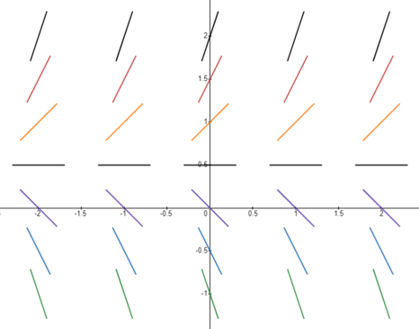
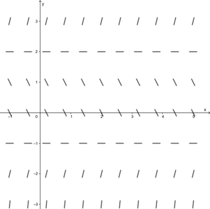
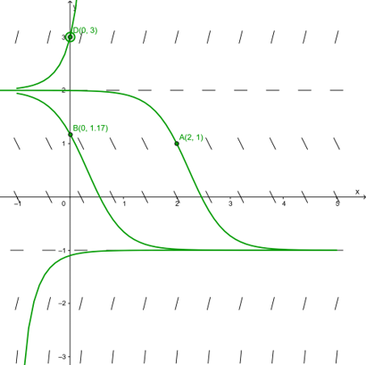

Not all ODE can be solved as in the previous sections.
In general, we cannot expect to obtain explicit solutions. But there does exist a way to get some information of the solution that works for every ODE.
Consider the IVP \(y' = f(t, y),\ y(t_0) = y_0\text{.}\) If we substitute \(t = t_0\) in the ODE, we obtain
Collecting all the derivatives for every point in the \(ty\)-plane, using line elements to denote the derivative, we obtain a picture called the direction field.
Example1.3.1.Direction field of \(y' = 2y - 1\).
Note that the right-hand-side is independent of \(t\text{.}\) So we only calculate \(y'\) with varying \(y\)-values. Here is the table of \(y'\) values with \(y\) ranging from \(-1\) to \(2\) with step \(1/2\text{.}\)
\(y\)
\(y' = 2y - 1\)
\(2\)
\(2 \times 2 - 1 = 3\)
\(3/2\)
\(2 \times 3/2 - 1 = 2\)
\(1\)
\(2 \times 1 - 1 = 1\)
\(1/2\)
\(2 \times 1/2 - 1 = 0\)
\(0\)
\(2 \times 0 - 1 = -1\)
\(-1/2\)
\(2 \times (-1/2) - 1 = -2\)
\(-1\)
\(2 \times (-1) - 1 = -3\)
Based on the previous table, we may sketch the direction field as follows.

Figure1.3.2.Direction field for \(y' = 2y - 1\)
We may use the direction field to conduct qualitative studies. Recall from Calculus I:
If \(y' > 0\text{,}\) then \(y\) increases;
If \(y' = 0\text{,}\) then \(y\) stays;
If \(y' < 0\text{,}\) then \(y\) decreases.
Therefore, the direction field can be used to determine the qualitative behavior of solutions of the ODE.
Example1.3.3.Qualitative behavior of solutions of \(y' = 2y - 1\text{.}\).
If \((t_0, y_0)\) is above \(y = 1/2\text{,}\) then the solution increases, going further away from \(y = 1/2\text{.}\)
If \((t_0, y_0)\) is below \(y = 1/2\text{,}\) then the solution decreases, going further away from \(y = 1/2\text{.}\)
If \((t_0, y_0)\) is on \(y = 1/2\text{,}\) then the solution stays on \(y = 1/2\text{.}\)
Example1.3.4.Nonlinear ODE \(y' = (y+1)(y-2)\).
\(y\)
\(y' = (y + 1)(y - 2)\)
\(3\)
\((3 + 1)(3 - 2) = 4\)
\(2\)
\((2 + 1)(2 - 2) = 0\)
\(1\)
\((1 + 1)(1 - 2) = -2\)
\(0\)
\((0 + 1)(0 - 2) = -2\)
\(-1\)
\(((-1) + 1)((-1) - 2) = 0\)
\(-2\)
\(((-2) + 1)((-2) - 2) = 4\)

Figure1.3.5.Direction field for \(y' = (y+1)(y-2)\)
Knowing the direction field, we may plot the graph of a few actual solutions on the \(yt\)-plane. The graph is usually called an integral curve. We may analyze the asymptotic behavior of the solutions, i.e., the behavior of \(y(t)\) when \(t\to \pm \infty\text{.}\) In most engineering practices, we only care about the long-term behavior, which means the behavior of \(y(t)\) when \(t\to + \infty\text{.}\)
Example1.3.6.Integral curve of \(y' = (y+1)(y-2)\) and asymptotic behavior of solutions.
We first sketch the integral curves, knowing that they must follow the flow given by the direction field.

Figure1.3.7.Direction field for \(y' = (y+1)(y-2)\)
From the direction field, the following asymptotic behaviors can be observed:
What happens if the ODE involves \(t\text{?}\) It is still possible to draw the direction field by hand and use the qualitative method to analyze the asymptotic behavior of the solutions. We will not require the technique in this course. Please watch MIT Lecture 1 1